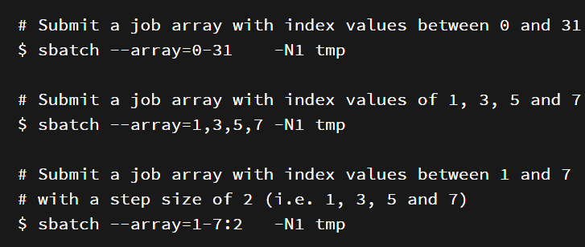
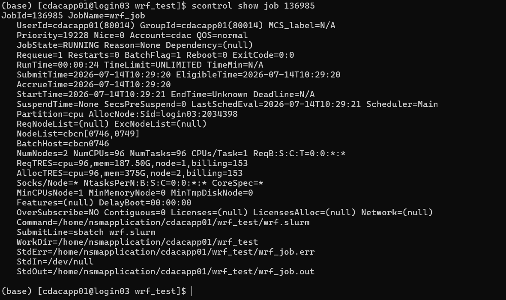
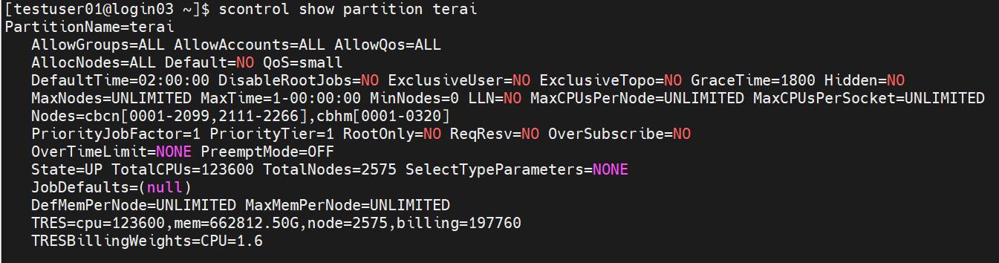

Resource Management
Fine-tuning large language models on the GPU nodes
Ready job scripts and tested recipes for LoRA / QLoRA fine-tuning of 14 B–235 B models on 8–128 GPU nodes, with measured speed for every configuration: see Bhaskera.
This section explains how you interact with the resource manager. It covers information about the resource manager, the definition of nodes within partitions, job policies, scheduler information, the process of submitting jobs to the system, monitoring active jobs and getting useful information about resource usage.
A system is a group of computers that work together to solve complex computational tasks and presents itself to the user as a single system. For the resources of a system (e.g. CPUs, GPUs, memory) to be used efficiently, a resource manager (also called workload manager or batch-queuing system) is important. While there are many different resource managers available, the resource manager at PARAM Rudra is SLURM. After submitting a job to the system, SLURM will try to fulfill the job’s resource request by allocating resources to the job. If the requested resources are already available, the job can start immediately. Otherwise, the start of the job is delayed (pending) until enough resources are available. SLURM allows you to monitor active (pending, running) jobs and to retrieve statistics about finished jobs.
SLURM, which is an open-source workload manager, efficiently allocates computing resources such as CPUs, GPUs, and memory to users' jobs, ensuring optimal resource utilization and job scheduling. SLURM provides features for job submission, monitoring, and management, allowing users to specify job requirements and dependencies. Slurm is a widely used batch scheduler in the top500 HPC list.
SLURM Partitions¶
Partition is a logical grouping of nodes that share similar characteristics or resources. Partitions are helpful to manage and allocate resources efficiently based on the specific requirements of jobs or users. PARAM Rudra consists of three types of computational nodes: i.e. CPU only nodes, High memory (with 768 GB memory) nodes and GPU-enabled GPU nodes.
The following partitions/queues have been defined to meet user requirements:
| Partition | Priority | Min Core / GPU | Max Core / GPU | Max Walltime | Max Queued / User | Max Running / User | Overall Running |
|---|---|---|---|---|---|---|---|
| debug | 4800 | 1 | 432 (9 nodes) | 01:00:00 | 4 | 2 | 40 |
| terai | 3400 | 480 (10 nodes) | 2400 (50 nodes) | 24:00:00 | 16 | 8 | 140 |
| shiwalik | 3700 | 2448 (51 nodes) | 12288 (256 nodes) | 24:00:00 | 4 | 2 | 30 |
| himachal | 4000 | 12336 (257 nodes) | 24576 (512 nodes) | 12:00:00 | 4 | 2 | 6 |
| himadri | 6000 | 24624 (513 nodes) | 72000 (1500 nodes) | 06:00:00 | 2 | 1 | 1 |
| gpu-debug | 4800 | 1 GPU card | 8 GPU Cards(4 nodes) | 01:00:00 | 4 | 2 | 40 |
| gpu-small | 3400 | 10 (5 nodes) | 50 (25 nodes) | 24:00:00 | 8 | 4 | 40 |
| gpu-large | 4000 | 52 (26 nodes) | 200 (100 nodes) | 12:00:00 | 4 | 2 | 6 |
| gpu-massive | 5000 | 202 (101 nodes) | 400 (200 nodes) | 06:00:00 | 2 | 2 | 2 |
| hm-small | 3700 | 480 (10 nodes) | 2400 (50 nodes) | 12:00:00 | 6 | 4 | 10 |
| hm-large | 4000 | 2448 (51 nodes) | 4800 (100 nodes) | 24:00:00 | 4 | 2 | 6 |
Source
PARAM Rudra Queue & Partition Policy · figures shown per compute-node core count, GPU partitions counted in GPU units
Note
Each node has 48 cores. Please utilize the maximum available cores when submitting jobs to the partition.
QoS Job policy¶
Users have the flexibility to run up to 10 simultaneous jobs. They can run an 8-node job for 4 days, a 16-node job for 2 days, or a 32-node job for 1 day. The default policy of the system allows for a maximum wall time of 4 days per job. However, this policy can be tailored to individual user needs or adjusted for all users in the future, depending on system usage. Users will be informed about any changes made to the SLURM policy.
Walltime : The walltime parameter defines the maximum amount of time for which a job is allowed to run under a particular QoS. The maximum walltime is determined by the selected QoS. Users are requested to explicitly specify the required walltime in their SLURM job script using the --time parameter. For example:
#SBATCH --time=02:00:00
The maximum walltime depends on the selected QoS. For example, debug and gpu-debug jobs are limited to 1 hour, while terai, shiwalik, and hm-small jobs can run for up to 24 hours. himachal, gpu-large, and hm-large jobs are limited to 12 hours, whereas himadri and gpu-massive jobs are limited to 6 hours. If a job exceeds the walltime specified in the SLURM script, the job will be terminated by SLURM. Therefore, users should provide a realistic walltime based on their expected execution time
Scheduling Type¶
PARAM Rudra has been configured with Slurm’s backfill scheduling policy. It is good for ensuring higher system utilization; it will start lower priority jobs if doing so does not delay the expected start time of any higher priority jobs. Since the expected start time of pending jobs depends upon the expected completion time of running jobs, reasonably accurate time limits are important for backfill scheduling to work well.
Job Priority :
The job's priority at any given time will be a weighted sum of all the factors that have been enabled in the slurm.conf file. Job priority can be expressed as:
Job_priority =
site_factor +
(PriorityWeightAge) * (age_factor) +
(PriorityWeightAssoc) * (assoc_factor) +
(PriorityWeightFairshare) * (fair-share_factor) +
(PriorityWeightJobSize) * (job_size_factor) +
(PriorityWeightPartition) * (priority_job_factor) +
(PriorityWeightQOS) * (QOS_factor) +
SUM(TRES_weight_cpu * TRES_factor_cpu,
TRES_weight_<type> * TRES_factor_<type>,
...)
- nice_factor
All of the factors in this formula are floating point numbers that range from 0.0 to 1.0. The weights are unsigned, 32-bit integers. The larger the number, the higher the job will be positioned in the queue, and the sooner the job will be scheduled. A job's priority, and hence its order in the queue, can vary over time. For example, the longer a job sits in the queue, the higher its priority will grow when the age weight is non-zero.
Age Factor: The age factor represents the length of time a job has been sitting in the queue and eligible to run.
Association Factor: Each association can be assigned an integer priority. The larger the number, the greater the job priority will be for jobs that request this association. This priority value is normalized to the highest priority of all the associations to become the association factor.
Job Size Factor: The job size factor correlates to the number of nodes or CPUs the job has requested.
Nice Factor: Users can adjust the priority of their own jobs by setting the nice value on their jobs. Like the system nice, positive values negatively impact a job's priority and negative values increase a job's priority. Only privileged users can specify a negative value.
Partition Factor: Each node partition can be assigned an integer priority. The larger the number, the greater the job priority will be for jobs that request to run in this partition.
Quality of Service (QOS) Factor: Each QOS can be assigned an integer priority. The larger the number, the greater the job priority will be for jobs that request this QOS.
Fair-share Factor: The fair-share component to a job's priority influences the order in which a user's queued jobs are scheduled to run based on the portion of the computing resources they have been allocated and the resources their jobs have already consumed.
Job Submission¶
We can submit jobs either through a Slurm script or by using the interactive method. Creating a Slurm script is the optimal way to submit a job to the system.
Submitting Batch Scripts Jobs
Here is the example of sample slurm script:
#!/bin/bash
#SBATCH -N 1 // number of nodes
#SBATCH --ntasks-per-node=1 // number of cores per node
#SBATCH --error=job.%J.err // name of error file
#SBATCH --output=job.%J.out // name of output file
#SBATCH --time=01:00:00 // time required to execute the program
#SBATCH --partition=debug
#SBATCH --mem=180G
#// To load the package //
source /home/apps/spack/share/spack/setup-env.sh
spack load intel-oneapi-compilers /nizifpn
cd <Path of the executable>
a.out (Name of the executable)
We can consider four cases of submitting a job here:
1.1 Submitting a simple standalone job:
This is a simple submit script which is to be submitted
Submitted batch job 106
1.2 Submit a job that's dependent on a prerequisite job being completed:
Consider a requirement of pre-processing a job before proceeding to actual processing. Pre-processing is generally done on a single core. In this scenario, the actual processing script is dependent on the outcome of the pre-processing script.
Here’s a simple job script.
Note that the Slurm -J option is used to give the job a name.
#!/bin/bash
#SBATCH -p debug
#SBATCH -J simple
#SBATCH --mem=180G
sleep 60
Submit the job:
$ sbatch simple.sh
Submitted batch job 149
Now we'll submit another job that's dependent on the previous job. There are many ways to specify the dependency conditions, but the "singleton" method is the simplest. The Slurm -d singleton argument tells Slurm not to dispatch this job until all previous jobs with the same name have completed.
$ sbatch -d singleton simple.sh //may be used for first pre-processing on a core and then submitting
Submitted batch job 150
$ squeue
JOBID PARTITION NAME USER ST TIME NODES NODELIST(REASON)
150 debug simple user1 PD 0:00 1 (Dependency)
149 debug simple user1 R 0:17 1 rpcn001
To check submited Job
$ squeue
JOBID PARTITION NAME USER ST TIME NODES NODELIST(REASON)
150 debug simple user1 R 0:31 1 rpcn001
1.3 Submit a job with a reservation allocated
Slurm has the ability to reserve resources for jobs being executed by select users and/or select bank accounts. A resource reservation identifies the resources in that reservation and a time period during which the reservation is available. The resources which can be reserved include cores, nodes.
Use the command given below to check the reservation name allocated to your user account
If your ‘user account’ is associated with any reservation the above command will show you the same. For e.g. The given reservation name is user_11. Use the command given below to make use of this reservation
1.4 Submitting multiple jobs with minor or no changes (array jobs)
A SLURM job array is a collection of jobs that differs from each other by only a single index parameter. Job arrays can be used to submit and manage a large number of jobs with similar settings.

Figure: Snapshot depicting the usage of “Job Array”
N1 is specifying the number of nodes you want to use for your job.
example: N1 -one node, N4 - four nodes. Instead of tmp here you can use the below example script.
#!/bin/bash
#SBATCH -N 1
#SBATCH --ntasks-per-node=48
#SBATCH --error=job.%A_%a.err
#SBATCH --output=job.%A_%a.out
#SBATCH --time=01:00:00
#SBATCH --partition=debug
#SBATCH --mem=180G
source /home/apps/spack/share/spack/setup-env.sh
spack load intel-oneapi-compilers /nizifpn
cd $HOME/testuser01 #change to your required directory
export OMP_NUM_THREADS=${SLURM_ARRAY_TASK_ID}
$HOME/testuser01/md_omp
Running Interactive Jobs
Another way to run your job is interactively. You can run an interactive job as follows:
The following command asks for a single core in one hour with the default amount of memory.
The command prompt of the allocated compute node will appear as soon as the job starts.
Exit the bash shell to end the job.
If the job is waiting for the resources, then this is how it will look :
If after a while, it will allocate resources, then it will look like this:
If you exceed the time or memory limit the job will also abort.
Please note that PARAM Rudra is NOT meant for executing interactive jobs. However, it can be utilized to quickly verify the successful execution of a job before submitting a larger batch job with a high iteration count. It can also be used for running small jobs. However, it's important to consider that other users may also be utilizing this node, so it's advisable not to inconvenience them by running large jobs.
There are various use cases for requesting interactive resources, such as debugging (launching a job, adjusting setup parameters like compile options, relaunching the job, and making further adjustments) and interactive interfaces (inspecting a node, etc.).
Parameters used in SLURM job script
The job flags are used with the SBATCH command. The syntax for the SLURM directive in a script is "#SBATCH
Common Slurm Batch Script Options¶
| Option | Syntax | Description |
|---|---|---|
| Partition | --partition=<partition_name> |
Specifies the partition (queue) where the job will be submitted. |
| Time Limit | --time=01:00:00 |
Sets the maximum wall-clock time for the job. |
| Nodes | --nodes=2 |
Requests the number of compute nodes required. |
| CPUs/Cores | --ntasks-per-node=8 |
Specifies the number of tasks (CPU cores) to run on each node. |
| GPU Resources | --gres=gpu:2 |
Requests two GPUs on GPU-enabled compute nodes. |
| Account | --account=<group-slurm-account> |
Specifies the Slurm account to be charged for the job. |
| Job Name | --job-name="lammps" |
Assigns a name to the job. |
| Error File | --error=<filename_pattern> |
Writes the standard error stream to the specified file. |
| Output File | --output=<filename_pattern> |
Writes the standard output stream to the specified file. |
| Node List | -w, --nodelist=<node_list> |
Requests that the job run on specific compute nodes. |
| Mail Type | --mail-type=<type> |
Sends email notifications for events such as BEGIN, END, FAIL, TIME_LIMIT, or ALL. Multiple values can be separated by commas. |
| Mail User | --mail-user=<email_address> |
Email address that receives notifications specified by --mail-type. |
| Reservation | --reservation=<reservation_name> |
Allocates resources from a named reservation. |
| Validate Script | --test-only |
Validates the batch script and estimates the expected start time without submitting the job. |
| Exclusive Access | --exclusive |
Allocates entire compute nodes exclusively for the job. No other jobs will share the allocated nodes. |
Sample SLURM Scripts for reference
Script for a Sequential Job
#!/bin/bash
#SBATCH -N 1 // number of nodes
#SBATCH --ntasks-per-node=1 // number of cores per node
#SBATCH --error=job.%J.err // name of error file
#SBATCH --output=job.%J.out // name of output file
#SBATCH --time=01:00:00 // time required to execute the program
#SBATCH --partition=debug
#SBATCH --mem=180G
#// To load the package //
source /home/apps/spack/share/spack/setup-env.sh
spack load intel-oneapi-compilers /nizifpn
cd <Path of the executable>
a.out (Name of the executable)
Script for a Parallel OpenMP Job
#!/bin/bash
#SBATCH -N 1 // Number of nodes
#SBATCH --ntasks-per-node=48 // Number of core per node
#SBATCH --error=job.%J.err // Name of error file
#SBATCH --output=job.%J.out // Name of output file
#SBATCH --time=01:00:00 // Time take to execute the program
#SBATCH --partition=debug
#SBATCH --mem=180G
source /home/apps/spack/share/spack/setup-env.sh
spack load intel-oneapi-compilers //nizifpn
cd <path of the executable>
#or
cd $SLURM_SUBMIT_DIR //To run job in the directory from where it is submitted
export OMP_NUM_THREADS=48 #//Depending upon your requirement you can change the number of threads. If total number of threads per node is more than 48, multiple threads will share core(s) and performance may degrade)
/home/cdac/a.out #//Name of the executable
Script for Parallel Job – MPI (Message Passing Interface)
#!/bin/sh
#SBATCH -N 16 // Number of nodes
#SBATCH --ntasks-per-node=48 // Number of cores per node
#SBATCH --time=06:50:20 // Time required to execute the program
#SBATCH --job-name=lammps // Name of application
#SBATCH --error=job.%J.err_16_node_48 // Name of the error file
#SBATCH --output=job.%J.out_16_node_48 // Name of the output file
#SBATCH --partition=debug
source /home/apps/spack/share/spack/setup-env.sh
spack load intel-oneapi-compilers /nizifpn #// To load the package
#// Below are Intel MPI specific settings //
export I_MPI_FALLBACK=disable
export I_MPI_FABRICS=shm:dapl
export I_MPI_DEBUG=9 #// Level of MPI verbosity
cd $SLURM_SUBMIT_DIR #//change to required path where command needs to be executed
or
cd /home/manjuv/LAMMPS_2018COMPILER/lammps-22Aug18/bench
#// Example Command to run the lammps in Parallel //
time mpiexec.hydra -n $SLURM_NTASKS -genv OMP_NUM_THREADS 1 /home/manjuv/LAMMPS_2018COMPILER/lammps-22Aug18/src/lmp_intel_cpu_intelmpi -in in.lj
Script for Hybrid Parallel Job – (MPI + OpenMP)
#!/bin/bash
#SBATCH --nodes=16
#SBATCH --ntasks-per-node=48
#SBATCH --time=06:50:20
#SBATCH --job-name=lammps
#SBATCH --error=job.%J.err_16_node_48
#SBATCH --output=job.%J.out_16_node_48
#SBATCH --partition=debug
#SBATCH --mem=180G
# Load required package
source /home/apps/spack/share/spack/setup-env.sh
spack load intel-oneapi-compilers /nizifpn
# Change to the job submission directory
cd "$SLURM_SUBMIT_DIR"
# Intel MPI settings
export I_MPI_FALLBACK=disable
export I_MPI_FABRICS=shm:dapl
export I_MPI_DEBUG=9
# OpenMP settings
export OMP_NUM_THREADS=24
# Run the LAMMPS application
time mpiexec.hydra -n 32 lammps.exe -in in.lj
Listing Partition¶
sinfo displays information about nodes and partitions allowing users to view available nodes in the partition within the system.
Monitoring jobs¶
Monitoring jobs on SLURM can be done using the command squeue. The command squeue provides high-level information about jobs in the Slurm scheduling queue (state information, allocated resources, runtime, etc
To monitor job
$ squeue
JOBID PARTITION NAME USER ST TIME NODES NODELIST(REASON)
106 debug slurm-jo user1 R 0:04 1 cbcn0001
The command scontrol provides even more detailed information about jobs and job steps.
It will report more detailed information about nodes, partitions, jobs, job steps, and configuration.

Figure: scontrol show job displays specific job information
scontrol update job <jobid>- set <new attribute value>
The above command change attributes of submitted job. Like time limit, nodelist, number of nodes, etc. For example:
Deleting jobs¶
Use the scancel command to delete active jobs. Users can cancel their own jobs only.
$ scancel <jobid>
Holding a job¶
Use the scontrol command to hold the job.
$scontrol hold <jobid>
$ squeue
JOBID PARTITION NAME USER ST TIME NODES NODELIST(REASON)
139 debug simple user1 PD 0:00 1 (Dependency)
138 debug simple user1 R 0:16 1 rpcn001
$ scontrol hold 139
$ squeue
JOBID PARTITION NAME USER ST TIME NODES NODELIST(REASON)
139 debug simple user1 PD 0:00 1 (JobHeldUser)
138 debug simple user1 R 0:32 1 rpcn001
Releasing a job¶
$ scontrol release 139
$ squeue
JOBID PARTITION NAME USER ST TIME NODES NODELIST(REASON)
139 debug simple user1 PD 0:00 1 (Dependency)
138 debug simple user1 R 0:46 1 rpcn001
Getting Node and Partition details¶
scontrol show node <node name> - shows detailed information about compute nodes.
scontrol show partition <partition name>- shows detailed information about a specific partition

Figure: scontrol show partition displays specific partition details
Accounting¶
Accounting system tracks and manages HPC resource usage. As jobs are completed or resources are utilized, accounts are charged and resource usage is recorded. Accounting policy is like a Banking System, where each department can be allocated with some predefined budget on a quarterly basis for CPU usage. As and when the resources are utilized, the amount will be deducted. The allocation will be reset half yearly. Depending upon the policy, users will be informed when their account is created about how much CPU hours have been allocated to them.
sacct
This command can report resource usage for running or terminated jobs including individual tasks, which can be useful to detect load imbalance between the tasks.
$ sacct -j <jobid>
Investigating a job failure¶
Job executions aren't always successful. There are various reasons for a job to stop or crash. The most common causes are:
- Exceeding resource limits
- Software-specific errors
This section discusses methods to gather information and find ways to avoid common issues.
It is important to collect error and output messages by either writing this information to the default location or specifying specific locations using the --error/--output option. Redirecting the error/output stream to /dev/null should be avoided unless you fully understand its implications, as error and output messages serve as the initial point for investigating job failures.
Exceeding Resource Limits
Each partition defines default and maximum time limits of the job runtime and memory usage. Within the job script, the current limits can be defined within the ranges. For better scheduling, the job requirements should be estimated and the limits should be adapted to the needs. Lower limits enable SLURM to find suitable scheduling opportunities more effectively. Additionally, specifying minimal resource overhead minimizes resource wastage.
If a job exceeds the runtime or memory limit, it will get killed by SLURM.
Software Errors
The exit code of a job is captured by Slurm and saved as part of the job record. For sbatch jobs the exit code of the batch script is captured. For srun, the exit code will be the return value of the executed command. Any non-zero exit code is considered a job failure, and results in job state of FAILED. When a signal was responsible for a job/step termination, the signal number will also be captured, and displayed after the exit code (separated by a colon).
I am familiar with PBS/ TORQUE. How do I migrate to SLURM?¶
| Environment Variables / PBS/Torque / SLURM | PBS/Torque | SLURM |
|---|---|---|
| Job ID | $PBS_JOBID |
$SLURM_JOBID |
| Submit Directory | $PBS_O_WORKDIR |
$SLURM_SUBMIT_DIR |
| Node List | $PBS_NODEFILE |
$SLURM_JOB_NODELIST |
| Job Specification | PBS/Torque | SLURM |
| Script Directive | #PBS |
#SBATCH |
| Job Name | -N [name] |
--job-name=[name] or -J [name] |
| Node Count | -l nodes=[count] |
--nodes=[min[-max]] or -N [min[-max]] |
| CPU Count | -l nodes=[count]:ppn=[count] |
--ntasks-per-node=[count] |
| CPUs Per Task | — | --cpus-per-task=[count] |
| Memory Size | -l mem=[MB] |
--mem=[MB] or --mem-per-cpu=[MB] |
| Wall Clock Limit | -l walltime=[hh:mm:ss] |
--time=[min] |
| Node Properties | -l nodes=4:ppn=8:[property] |
--constraint=[list] |
| Standard Output File | -o [file_name] |
--output=[file_name] or -o [file_name] |
| Standard Error File | -e [file_name] |
--error=[file_name] or -e [file_name] |
| Combine stdout/stderr | -j oe (both to stdout) |
Default if --error is not specified |
| Job Arrays | -t [array_spec] |
--array=[array_spec] or -a [array_spec] |
| Delay Job Start | -a [time] |
--begin=[time] |
Addressing Basic Security Concerns¶
-
Your account on PARAM Rudra is ‘private to you’. You are responsible for any actions emanating from your account. It is suggested that you should never share the password with anyone.
-
Do not grant permission of your home directory to any other user, as it may expose your personal files to unauthorized access.
Per user
-
Every user will have a quota of 1TiB of soft limit in the HOME file system ($HOME) and 1 TiB of soft limit in the SCRATCH($SCRATCH) file system.
-
Users are recommended to copy their execution environment and input files to scratch file system ($SCRATCH) during job running and copy output data back to HOME area
-
File retention policy has been implemented on Lustre storage for the "$SCRATCH" file system. After the jobs are completed, you need to store the data in $HOME. Users are requested to regularly back up their data from the $SCRATCH directory. As per the policy, files stored in $SCRATCH will be retained for only one week, after which they will be permanently deleted.
It is important to note:
- Compilations are performed on the login node. Only the execution is scheduled via SLURM on the compute nodes.
- It is important to collect error/output messages, either by writing such information to the default location or by specifying specific locations using the --error or --output option. Error and output messages serve as the starting point for investigating a job failure. If not specified, the Job Id is also appended to the output and error filenames.
- Submitting a series of jobs (a collection of similar jobs) as array jobs instead of one by one is crucial for improving backfilling performance and thus job throughput, instead of submitting the same job repeatedly.
- User has to specify #SBATCH --gres=gpu:1/2 in their job script if user wants to use 1 or 2 GPU cards on GPU nodes